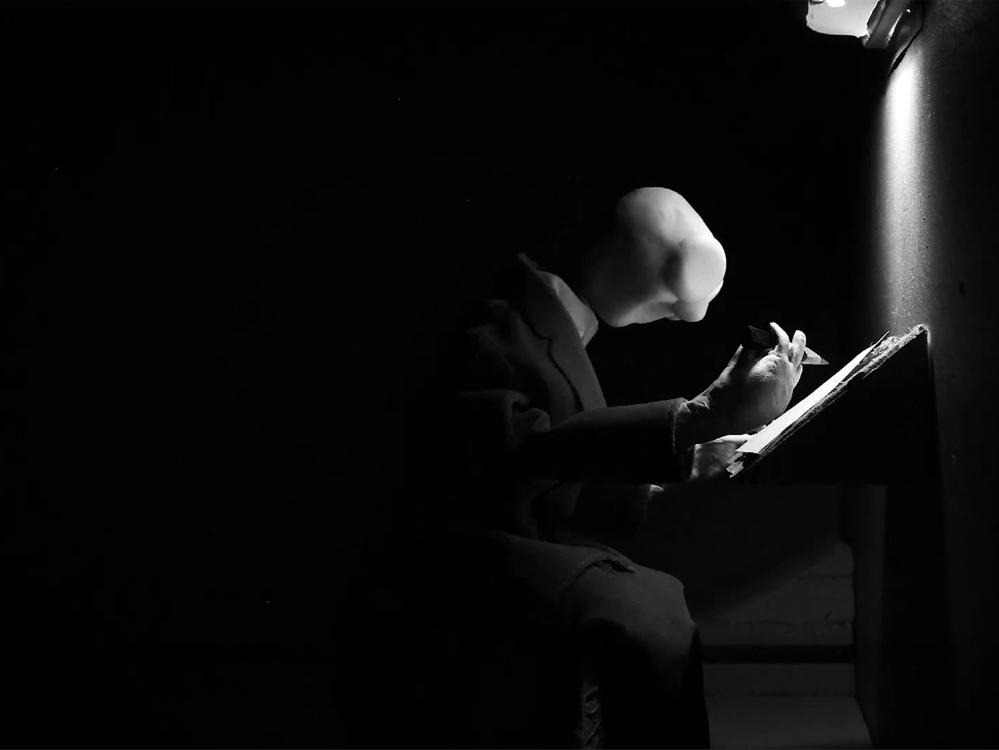
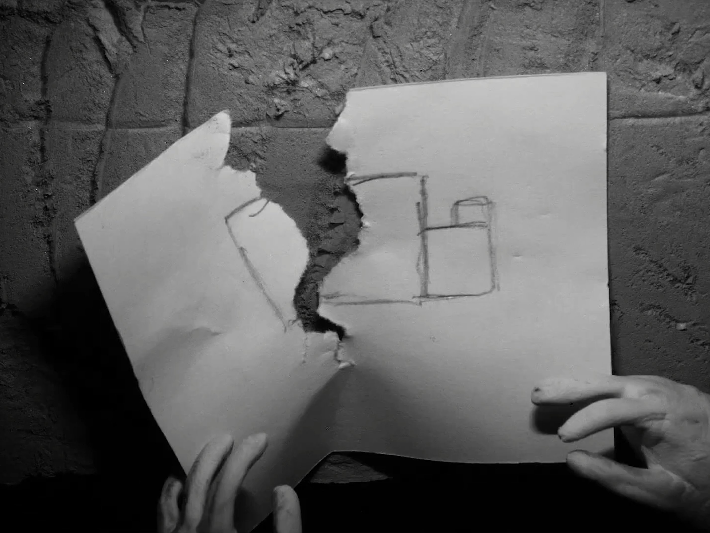
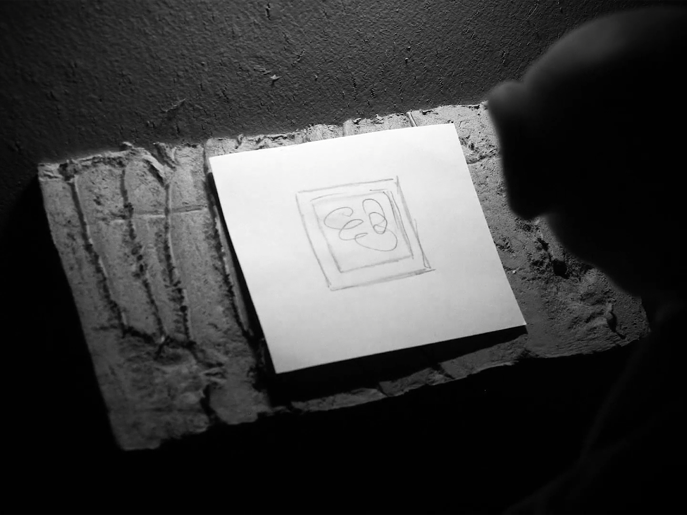
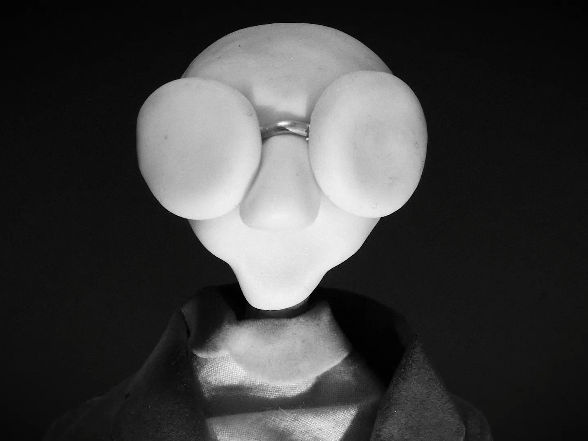

Inspiré par les premiers courts métrages en stop motion de Jean Pierre Jeunet et Marc Caro j’ai voulu en réaliser un
Bloom est un court métrage e nnoir et blanc de 3mn, il raconte l’histoire d’un artiste qui n’arive pas à créer.
J’ai réalisé le personnage principal avec une base de fil de fer avec des couches de mousse d’emballage et de pâte fimo, pour l’habiller j’ai récupéré une tenue de vieille poupée que j’ai modifiée pour rester dans le style sobre du film. Le décor lui est entièrement fait d’assemblages de plaques de polystyrène peint.

- 
- 
- 
- 